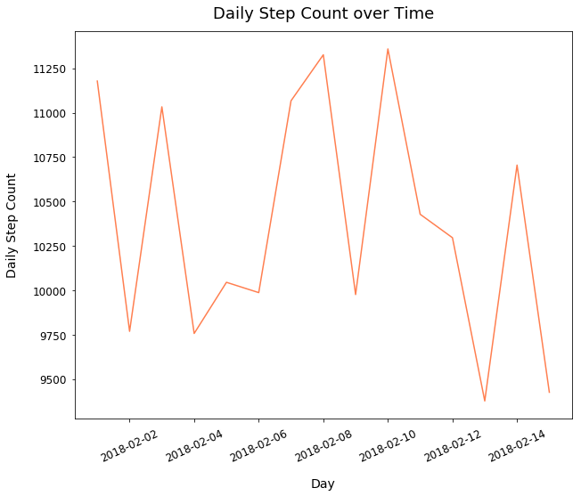
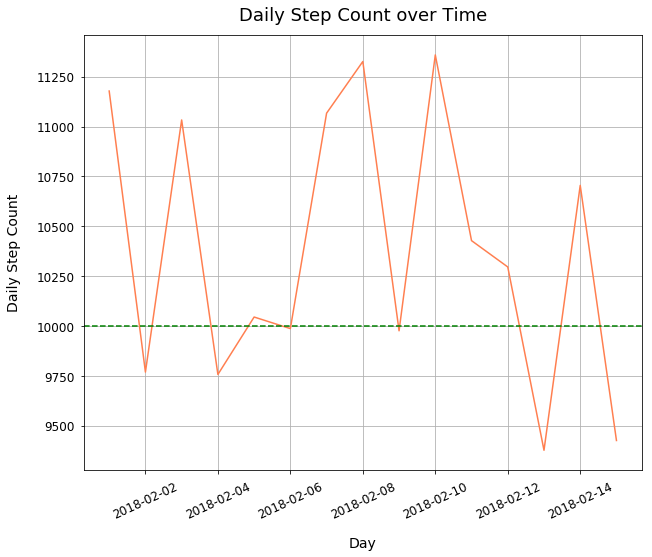
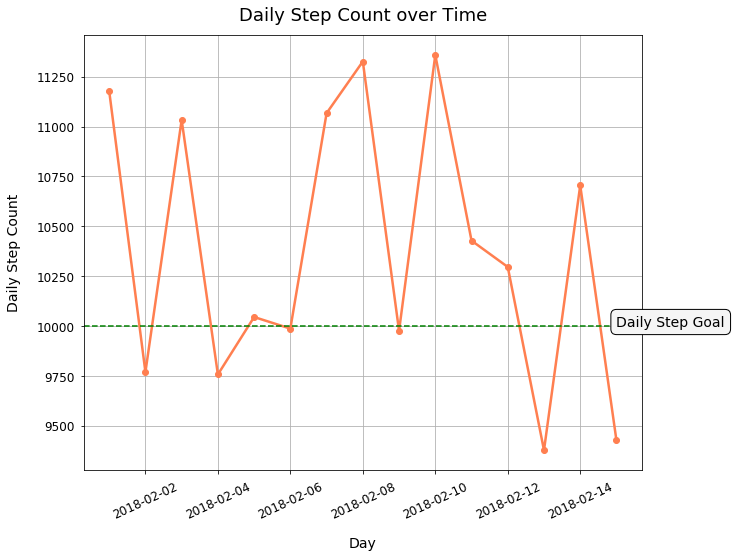

Style Line Plots using Matplotlib
- Mar 4 • 5 min read
- Key Terms: line plot, datetime
This post will cover how to make some basic changes to Matplotlib line plots such as how to:
- Add a grid
- Add a horizontal dotted line
- Add a text label
- Add markers on plotted points
- Adjust line thickness
Import Modules
import matplotlib.pyplot as plt
import seaborn as sns
from datetime import datetime
% matplotlib inline
Fitbit Activity Data
Below is my Fitbit activity of daily step count over a 15 day time period.
dates = ['2018-02-01', '2018-02-02', '2018-02-03', '2018-02-04',
'2018-02-05', '2018-02-06', '2018-02-07', '2018-02-08',
'2018-02-09', '2018-02-10', '2018-02-11', '2018-02-12',
'2018-02-13', '2018-02-14', '2018-02-15']
steps = [11178, 9769, 11033, 9757, 10045, 9987, 11067, 11326, 9976,
11359, 10428, 10296, 9377, 10705, 9426]
Convert Date Strings to Datetime Objects
dates_list = [datetime.strptime(date, '%Y-%m-%d') for date in dates]
Initial Plot with Generic Plot Style Customizations
These initial styles could be applied to any type of plot - whether that be a scatter plot, line plot or a histogram.
plt.figure(figsize=(10, 8))
plt.plot(dates_list, steps, color='coral')
plt.title("Daily Step Count over Time", fontsize=18, y=1.02)
plt.xlabel("Day", fontsize=14, labelpad=15)
plt.ylabel("Daily Step Count", fontsize=14, labelpad=15)
plt.tick_params(labelsize=12, pad=6)
plt.xticks(rotation=25);

Add a Grid
Call the grid method and pass the value True to the b argument - b for boolean. This action includes a grid.
In the grid method, pass the value 0.5 to the linewidth argument to make thinner grid lines than usual.
plt.figure(figsize=(10, 8))
plt.plot(dates_list, steps, color='coral')
plt.title("Daily Step Count over Time", fontsize=18, y=1.02)
plt.xlabel("Day", fontsize=14, labelpad=15)
plt.ylabel("Daily Step Count", fontsize=14, labelpad=15)
plt.tick_params(labelsize=12, pad=6)
plt.xticks(rotation=25)
plt.grid(b=True, linewidth=0.5);

Add Horizontal Dotted Line for Daily Step Goal
Call the axhline method and pass the following values to the arguments:
| argument | value | description |
|---|---|---|
| y | 10000 | Horizontal line will be at y-coordinate of 10000 daily steps |
| color | green | Color of our horizontal line |
| linestyle | -- | Dashed line style |
| linewidth | 1.5 | Thickness of line |
plt.figure(figsize=(10, 8))
plt.plot(dates_list, steps, color='coral')
plt.title("Daily Step Count over Time", fontsize=18, y=1.02)
plt.xlabel("Day", fontsize=14, labelpad=15)
plt.ylabel("Daily Step Count", fontsize=14, labelpad=15)
plt.tick_params(labelsize=12, pad=6)
plt.xticks(rotation=25)
plt.grid(True)
plt.axhline(y=10000, color='green', linestyle='--', linewidth=1.5);

Text Label on Plot
We want to make clear that the horizontal line is our Daily Step Goal.
Call the text method and pass in the following arguments:
| argument | value | description |
|---|---|---|
| x | dates_list[-1] | Start of text x-coordinate location at last x-tick value |
| y | 10000 | Text will be at y-coordinate of 10000 daily steps |
| s | Daily Step Goal | String of text |
| fontsize | 1.5 | Font size of text in pixels |
| bbox facecolor | whitesmoke | Background color of text box |
| bbox boxstyle | round, pad=0.4 | Rounded corners text box with padding of 0.4px between text and box border |
plt.figure(figsize=(10, 8))
plt.plot(dates_list, steps, color='coral')
plt.title("Daily Step Count over Time", fontsize=18, y=1.02)
plt.xlabel("Day", fontsize=14, labelpad=15)
plt.ylabel("Daily Step Count", fontsize=14, labelpad=15)
plt.tick_params(labelsize=12, pad=6)
plt.xticks(rotation=25)
plt.grid(True)
plt.axhline(y=10000, color='green', linestyle='--', linewidth=1.5)
plt.text(x=dates_list[-1], y=10000, s="Daily Step Goal", fontsize=14,
bbox=dict(facecolor='whitesmoke', boxstyle="round, pad=0.4"));

Add Markers on Plotted Points
In our plot method, pass the value o to the marker argument to create filled in plotted points on our line.
plt.figure(figsize=(10, 8))
plt.plot(dates_list, steps, color='coral', marker='o')
plt.title("Daily Step Count over Time", fontsize=18, y=1.02)
plt.xlabel("Day", fontsize=14, labelpad=15)
plt.ylabel("Daily Step Count", fontsize=14, labelpad=15)
plt.tick_params(labelsize=12, pad=6)
plt.xticks(rotation=25)
plt.grid(True)
plt.axhline(y=10000, color='green', linestyle='--', linewidth=1.5)
plt.text(x=dates_list[-1], y=10000, s="Daily Step Goal", fontsize=14,
bbox=dict(facecolor='whitesmoke', boxstyle="round, pad=0.4"));

Make Line Thicker
In our plot method, pass a value greater than 2 to the linewidth argument to see a significantly thicker line. This often makes your line plots easier to see and interpret for viewers.
plt.figure(figsize=(10, 8))
plt.plot(dates_list, steps, color='coral', marker='o', linewidth=2.5)
plt.title("Daily Step Count over Time", fontsize=18, y=1.02)
plt.xlabel("Day", fontsize=14, labelpad=15)
plt.ylabel("Daily Step Count", fontsize=14, labelpad=15)
plt.tick_params(labelsize=12, pad=6)
plt.xticks(rotation=25)
plt.grid(True)
plt.axhline(y=10000, color='green', linestyle='--', linewidth=1.5)
plt.text(x=dates_list[-1], y=10000, s="Daily Step Goal", fontsize=14,
bbox=dict(facecolor='whitesmoke', boxstyle="round, pad=0.4"));
